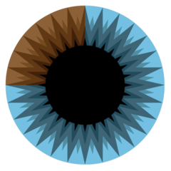

Licenca
To delo je na voljo pod pogoji slovenske licence Creative Commons 2.5:
priznanje avtorstva - nekomercialno - deljenje pod enakimi pogoji.
Celotna licenca je na voljo na spletu na naslovu http://creativecommons.org/licenses/by-nc-sa/2.5/si/. V skladu s to licenco je dovoljeno vsakemu uporabniku delo razmnoževati, distribuirati, javno priobčevati, dajati v najem in tudi predelovati, vendar samo v nekomercialne namene in ob pogoju, da navede avtorja oziroma avtorje in izdajatelja tega dela. Če uporabnik delo predela, kar pomeni, da ga spremeni, preoblikuje, prevede ali uporabi to delo v svojem delu, lahko predelavo dela ponudi na voljo le pod pogoji, ki so enaki pogojem iz te licence oziroma pod enako licenco.

Grafične transformacije
Izvedemo lahko tudi več transformacij zapored. Če uporabimo skaliranje in translacijo zapored, lahko obliko prestavimo in povečamo oziroma pomanjšamo hkrati.
Pri tej simulaciji uporabi skaliranje in translacijo, da obliko prestaviš v končni položaj.
Poglejmo, kaj se zgodi, če zamenjamo vrednosti $x$ in $y$ vseh oglišč, ki sestavljajo obliko.
Pri tej simulaciji zamenjaj vrednosti koordinat vsakega oglišča.
Transformacija v prejšnji simulaciji je preprosta rotacija, ki je uporabna za nastavitev položaja predmeta v prizoru oziroma sceni ali določanje kota navidezne kamere.
Ročno vnašanje in spreminjanje koodrinat je neučinkovito. Na srečo obstaja veliko boljši način, ki ga bomo spoznali v nadaljevanju.
Veliko boljši in lažji način vključuje poznavanje in razumevanje matrik. Matrike in operacije z njimi si bomo ogledali v nadaljevanju. Za razumevanje matrik pa je nujno tudi poznavanje in razumevanje vektorjev.
Če vektorjev (in matrik) še ne poznaš ali pa želiš zgolj obnoviti znanje, si oglej serijo odličnih videoposnetkov v angleškem jeziku. Serija vsebuje 15 epizod, za razumevanje te učne enote pa bo dovolj, če si ogledaš prvih pet epizod:

Transformacije z matrikami
V računalniški grafiki transformacije običajno izvajamo z uporabo matrične aritmetike, kar je krajši zapis, ki pomeni izvajanje številnih preprostih aritmetičnih operacij naenkrat. Matrika za dvodimenzionalne transformacije, ki smo jih spoznali do sedaj, vsebuje štiri vrednosti. Dvodimenzionalno transformacijo skaliranja, pri kateri vsako vrednost $x$ in $y$ podvojimo, z matriko zapišemo kot: $$ \begin{bmatrix} 2 & 0 \\ 0 & 2 \\ \end{bmatrix} $$ kjer zgornja leva vrednost pomeni pomnoži vse vrednosti $x$ z 2, spodnja desna vrednost pa pomnoži vse vrednosti $y$ z 2.
Pri tej simulaciji za skaliranje uporabi zgornjo matriko.
Od tu dalje imej interkativno simulacijo odprto v drugem oknu in je ne zapiraj. Tako boš lahko sledil(-a) besedilu in operacije sproti izvajal(-a) oziroma preverjal(-a) v interaktivni simulaciji.
Oglejmo si podrobneje, kaj se pravzaprav dogaja. Vsako točko oblike lahko predstavimo z njenima koordinatama $x$ in $y$. Zgornja desna točka oblike v interaktivni simulaciji je točka $(2, 3)$ v koordinatnem sistemu.
Ko uporabljamo transformacijo skaliranja to dejansko pomeni, da izvajamo množenje matrik. Na primer skalirajmo točko $(2, 3)$ s faktorjem $2$, kot v prejšnji interaktivni simulaciji: $$ \begin{bmatrix} 2 & 0 \\ 0 & 2 \\ \end{bmatrix} \times \begin{bmatrix} 2 \\ 3 \\ \end{bmatrix} = \begin{bmatrix} 4 \\ 6 \\ \end{bmatrix} $$
Tako dobimo nov položaj $(4, 6)$ zgornje desne točke, ki se ujema s točko v prejšnji interaktivni simulaciji po uporabi matrike skaliranja! Na enak način uporabimo množenje z matriko na vseh sedmih točkah dane oblike.